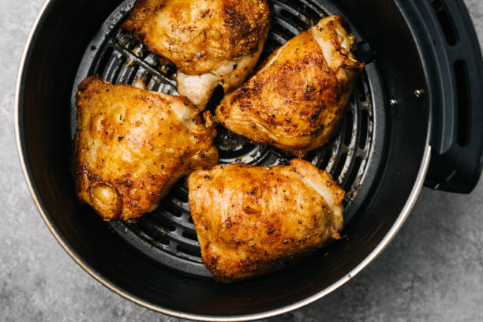

Air Fryer Chicken
Home

Description
Nothing will fuel your recovery better than chicken and vegetables. This
recipe is perfect for anyone with an active lifestyle. No need to count
calories here. Eat as much as you like!
Ingredients
- four skin-on chicken thighs
- vegetable medley
Steps
- Place the thighs in one air fryer basket
- Place the vegetables in another air fryer basket
- Set the chicken to 390º for 50 minutes
- Set the vegetables to 390º for 20 minutes
- Select "Smart Finish"
- Enjoy!